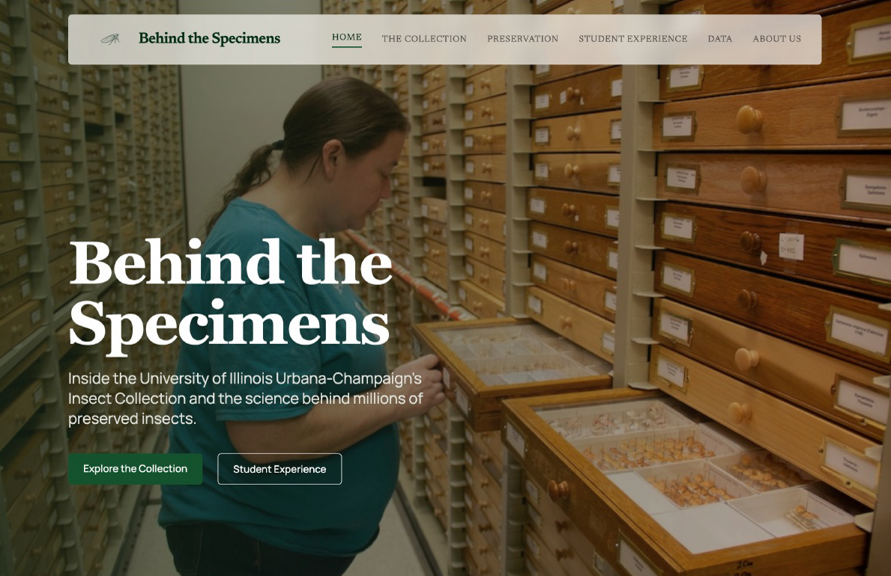

Behind the Specimens
Yes, one of them is literally about bugs — but hear us out. The project is a collaboration between four journalists, each covering a different beat, built around a subject hiding in plain sight at U of I: one of the largest entomological collections in North America, with over 7 million preserved specimens tucked behind rows of wooden drawers. Situated at the hub of Midwest agriculture and biodiversity research, the university holds resources few people know exist — and we wanted to show what it takes to keep them alive.
My contributions spanned the full production pipeline — conducting interviews, field recording, photography, storyboarding the site's narrative structure and UX, building the data visualization, and developing the website end-to-end through vibe coding agents.
Visit project ↗